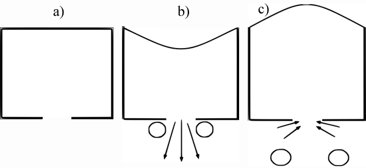

Heat Transfer and Fluid Dynamics in a Synthetic Impinging Jet over a Heated Surface |
|
Project TeamAlfonso Ortega and Luis Silva Project SponsorThe James R. Birle Endowment Motivation |
|
|
Synthetic jets are created by oscillatory pumping of
fluid to and from an orifice. In its most common rendition, they have
been fabricated using piezo-resistive actuators to produce periodic
volume change in the cavity feeding the orifice, thereby periodically
ingesting fluid and ejecting it as a jet, or a puff, into an open
plenum. Although such a system has zero net flow from the orifice, it
produces a jet with net momentum because the flow patterns are quite
distinct in the ingestion compared to the ejection parts of the cycle.
As such this jet can be used as a cooling device by configuring it to
impinge onto the heated surface. Except for the earliest seminal work
on the subject, most of the studies have been directed towards
understanding synthetic jets created by pumps fashioned with
piezo-resistive actuators as this type of device has shown promise as a
small scale cooling technique for air-cooled electronic systems..  Fig.1: Schematic of the synthetic jet generation during its 3 stages: (a) initial state, (b) forward stroke (ejection of fluid), and (c) backward stroke (injection of fluid)
Project Description
Publications
|
|
 PDF
PDF